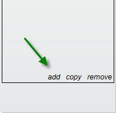
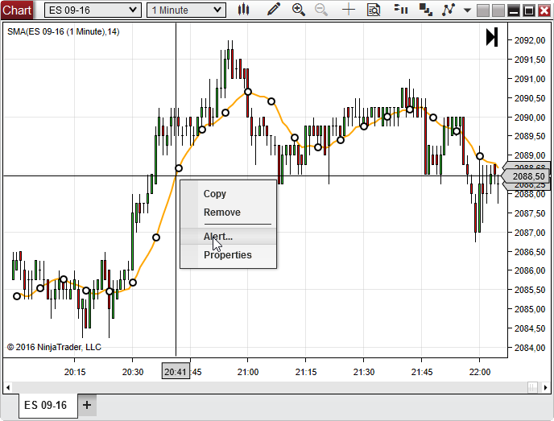
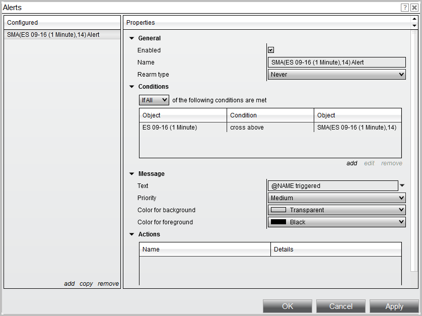
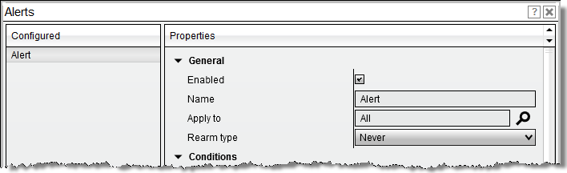
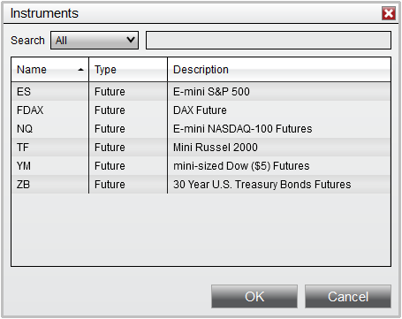
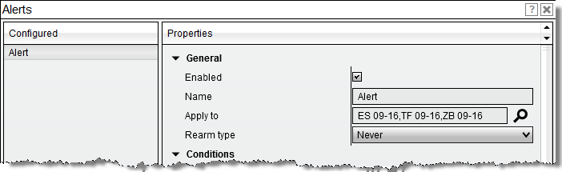
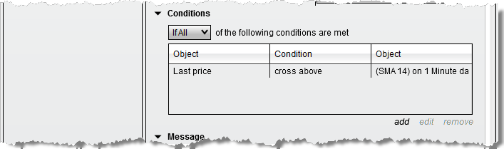
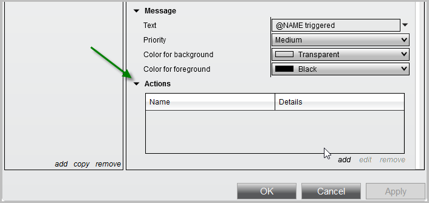
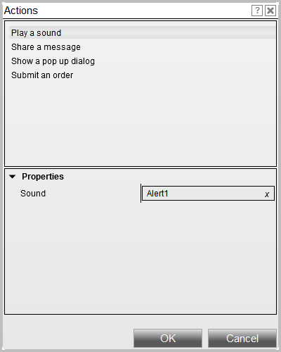
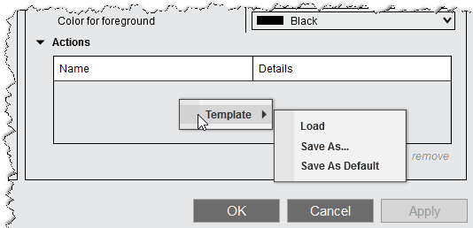

|
<< Click to Display Table of Contents >> Configuring Alerts |


|
Configuring Alerts
|
<< Click to Display Table of Contents >> Configuring Alerts |
|
Alerts can be created using conditions which monitor various "objects" which exist on the chart, or market analyzer display. Possible Condition Objects include a chart's data series, indicators, drawing tools, or any Market Analyzer column value.
Adding an alert from the alert dialogYou can create a new generic alert by first accessing the Alerts Dialog window, and selecting the "add" text which will add a new alert to your configured alerts panel.

Any suitable object which currently exists on the window or tab will be available to use as a Condition Object for the alert. For example, if you have a Market Analyzer with several customized columns added, you will be able to use any of those columns as a Condition Object. A Chart will work the same way in that any data series, indicator, or drawing object that currently exists on the chart will be available as a Condition Object.
Creating an alert from a chart indicatorIf you have an indicator configured on an existing chart you wish to use in your alert condition, you can easily access this by first left mouse clicking on the indicator plot to select the indicator, and then selecting Alert

Doing so will automatically add the selected indicator as an object that is used in the Conditions properties.

|
 Understand the general alert properties
Understand the general alert properties
General Alert PropertiesThe General section allow you to configure the following alert properties:
*The On connect rearm type is aware of 4 different types of connection events which will define how the On connect rearm type behaves:

Applying alerts to specific instrumentsIf you are using a window which has multiple instruments, such as a Market Analyzer, or a Chart with multiple data series, the default behavior will be monitor "All" instruments contained in that window tab.
By selecting the Magnify glass icon next to the Apply to property, a new window will appear which will list all of the configured instruments and allow you to select a specific set of instruments to be monitored by the alert:
1.From the newly opened Instruments window, select the instruments you wish to apply the condition to

2. Press OK on the Instruments window
3. Your Apply to field will now list the instrument names you selected earlier, indicating that alerts will only be triggered on instruments contained in this list.

Tip: You can also simply type in the Apply to field to add a specific instrument, or use your backspace key to delete a specific instrument |
 Understanding the conditions properties
Understanding the conditions properties
Alert ConditionsThe Alert Conditions allow you to define the exactly what the alert will monitor.
1. Set Conditions to match "If Any" or "If All" of the following conditions are met:
2. A list of the current objects and conditions to monitor 3. Add a new condition, or edit and remove existing conditions

Managing Alert ConditionsTo define a new alert condition, select the "add" text which will open a Condition Builder window where you can specify exactly which condition to monitor. Please see our Help Guide article on the Condition Builder for information on defining an alert condition.
The "edit" text will allow you to edit a selected condition.
Selecting "remove" will remove the selected condition. |
 Understanding the alert message properties
Understanding the alert message properties
Alert MessageThe alert message properties allow you to define general settings for how the alert is treated when the condition is satisfied. All alerts that are generated are sent to to the Alerts Log window and will display the message you configured in this section. You will also be able to control the priority of the alert, as well as background and foreground colors used.
|
 Understanding the action properties
Understanding the action properties
ActionsWhen an alert has been triggered, there are a number of customizable actions that can be taken at that time. These actions include the following:
Configuring ActionsTo access these actions, you will need to make sure the Actions group is expanded by selecting the arrow next to this field in the Alerts properties menu as per the screen shot below:

Selecting the "add" text will open the Actions window where you can define the custom actions. You can setup as many custom actions as you would like. This means you can have an alert do more than one custom action as you want. For example, you can set an alert to Play a Sound and Share a message to a Sharing Service under he same condition.

Working with Actions TemplatesAfter configuring Actions, you can right click within the Actions columns, select Template, and Save As to create a template. Within the right click menu is also where you would be able to load any saved templates

Actions Property Definitions
|